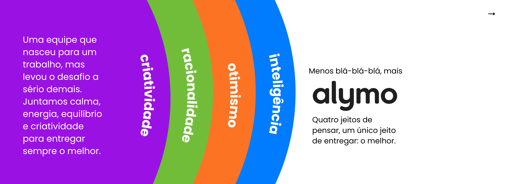
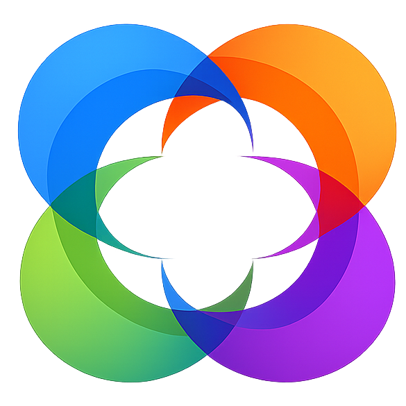
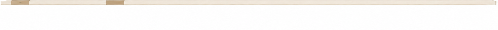

ㅤㅤㅤㅤㅤ
ㅤㅤㅤㅤㅤ
 ㅤㅤㅤㅤㅤ
ㅤㅤㅤㅤㅤ
 ㅤㅤㅤㅤㅤ
ㅤㅤㅤㅤㅤ


ㅤㅤㅤㅤㅤ
Descubra mais sobre o Alymo!

Somos o Alymo, uma equipe formada por Arthur, Lorenzo, Yasmin e Murilo. Somos movidos por muita Obstinação. A obstinação de nos tornarmos os melhores.
Nosso logotipo foi desenhado com base na teoria das cores para traduzir a personalidade de cada integrante da equipe.
O do Lorenzo mostra seu jeito mais introspectivo e organizado, alguém que pensa antes de agir e ajuda a manter tudo no lugar.
A personalidade associada ao azul é pautada pela estabilidade, serenidade e busca pela harmonia.
O do Murilo traz toda a sua espontaneidade e criatividade, além do otimismo que anima e movimenta o time.
A personalidade laranja é movida pela energia, entusiasmo e pela necessidade de socialização e ação.
O do Arthur representa empatia e equilíbrio. Ele é quem acolhe, escuta e ajuda a resolver as coisas com leveza.
A personalidade verde está intimamente ligada ao realismo, ao crescimento e à busca por segurança.
Já o da Yasmin destaca seu lado individualista e criativo, com sensibilidade aos detalhes e ideias que dão personalidade ao que fazemos.
A personalidade roxa está associada à intuição, à individualidade e à busca por um propósito maior.
Conheça quem nós somos:
ArthurㅤㅤㅤㅤㅤㅤㅤㅤㅤㅤㅤㅤㅤㅤㅤㅤㅤㅤㅤㅤㅤLorenzoㅤㅤㅤㅤㅤㅤㅤㅤㅤㅤㅤㅤㅤㅤㅤYasminㅤㅤㅤㅤㅤㅤㅤㅤㅤㅤㅤㅤ Murilo
ㅤㅤㅤㅤㅤ
ㅤㅤㅤㅤㅤ
ㅤㅤㅤㅤㅤ

Se interessou e quer conversar com a gente? Acesse!